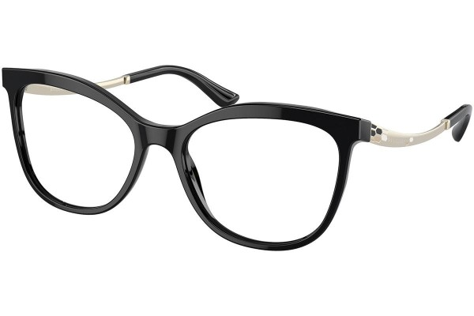

Nabídka služeb

Dioptrické brýle
Dioptrické brýle se používají ke korekci zrakové vady. Moderní obruby slouží ke korekci dioptrické nedostatečnosti očí.
Cena: 750Kč - 5 500Kč
KoupitKontaktní čočky
Kontaktní čočky se používají ke korekci zrakové vady. U nás vám naučíme s aplikovat čočky pro každodenní používání.
Cena: 500Kč - 1 090Kč
Koupit
měření zraku
Vyšetření zraku u nás v oční optice provádějí pouze odborně vzdělaní pracovníci – optometristé.
Cena: 250Kč - 700Kč
Objednat